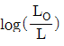
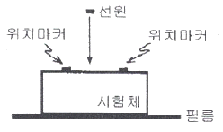
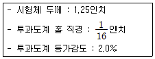
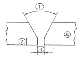
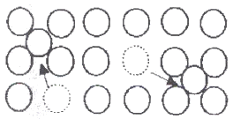

방사선비파괴검사산업기사(구) (2008-03-02 기출문제)
1과목: 방사선투과검사 시험
1. 방사선투과시험에서 필름농도를 구하는 공식은? (단, LO : 입사광의 강도, L : 투과광의 강도)
- 필름농도 =

- 필름농도 = log(L - LO)
- 필름농도 = log(LO×L)
- 필름농도 = log(LO+L)
(정답률: 알수없음)

2. 다음 중 동위원소(lsotope)에 대한 설명으로 틀린 것은?
- 원자번호가 같고 질량수가 다른 것
- 양성자수가 같고 질량수가 다른 것
- 양성자수가 같고 중성자수가 다른것
- 핵의 전하수가 같고 궤도전자수가 다른 것
(정답률: 알수없음)
3. 다음 중 Ir-192의 γ선에 대한 반가층이 가장 작은 것은?
- 흙
- 철판
- 알루미늄
- 콘크리트
(정답률: 알수없음)
4. 다음 중 침투탐상시험으로 검출할 수 있는 결함은?
- 플라스틱의 내부 결함
- 콘크리트의 내부 기공
- 강관의 표면과 내부 결함
- 비정질 유리의 열린 표면 결함
(정답률: 알수없음)
5. 방사선투과사진이 선명하고 실물과 가까운 상(image)을 얻기 위한 기하학적인 원리를 설명한 것으로 옳은 것은?
- 선원의 크기는 가급적 커야 한다.
- 시험체와 필름은 수직을 이루어야 한다.
- 선원은 가능한 한 시험체에 밀착시켜야 한다.
- 선원과 필름은 가능한 한 수직을 이루어야 한다.
(정답률: 알수없음)
6. 다음 침투탐상시험법 중에서 미세한 결함의 검출능력이 가장 큰 것은?
- 수세성 형광침투탐상시험법
- 후유화성 형광침투탐상시험법
- 수세성 염색침투탐상시험법
- 용제제거성 형광침투탐상시험법
(정답률: 알수없음)
7. 비파괴검사의 목적과 가장 거리가 먼 것은?
- 고가의 제품을 만들기 위하여
- 고객의 만족을 확산시키기 위하여
- 품질수준을 유지하기 위하여
- 보다 품질 좋은 생산품을 만들기 위하여
(정답률: 알수없음)
8. 방사선투과시험의 장점을 설명한 것으로 틀린 것은?
- 두꺼운 시험체 내의 균열 검출이 용이하다.
- 기공이나 터짐 등의 불연속이 잘 검출된다.
- 라미네이션은 방향성으로 인하여 잘 검출된다.
- 방사선 빔에 평행하지 않은 균열의 검출이 용이하다.
(정답률: 알수없음)
9. Ir-192 25Ci 선원을 사용하여 차폐체 없이 방사선투과시험을 하려고 한다. 1주당 피폭선량을 100mR 이하로 하고자 할 때 1주간 촬영 가능한 필름의 최대 매수는? (단, 선원과 작업자사이의 거리 10m, 방사선투과사진 1매당 노출시간 1분, Ir-192에 대한 RHM은 0.5이다.)
- 24매
- 48매
- 72매
- 96매
(정답률: 알수없음)
10. X선과 γ선에 대한 설명으로 잘못된 것은?
- 에너지는 침투능력을 결정한다.
- 매우 낮은 주파수를 갖는다.
- 전자파 방사선의 일종이다.
- 매우 짧은 파장을 갖는다.
(정답률: 알수없음)
11. 시험체와 시험체 주위에 압력차를 설정하여 행하는 비파괴검사법은?
- X선 회절법
- 중성자투과검사
- 누설검사
- 와전류탐상검사
(정답률: 알수없음)
12. 다음 비파괴검사 중 진행하고 있는 결함을 효과적으로 검출할 수 있는 시험법은?
- 자분탐상시험
- 방사선투과시험
- 침투탐상시험
- 음향방출시험
(정답률: 알수없음)
13. 선형투과도계를 사용할 경우 가는 선이 용접부의 바깥쪽으로 가게 하는 직접적인 이유는?
- 필름의 상질을 증가시키기 위하여
- 기하학적 불선명도를 최소한으로 하기 위하여
- 배치가 쉽고 필름 콘트라스트를 증가시키기 위하여
- 시험부의 유효 길이 내에서 끝단부의 상질을 평가하기 위하여
(정답률: 알수없음)
14. 방사선투과시험의 투과도계에 대한 설명으로 가장 거리가 먼 것은?
- 투과도계의 상은 결함 검출의 크기를 결정하는 척도를 나타낸다.
- 투과도계의 상은 방사선투과사진의 상질을 나타내는 척도로 쓰인다.
- 투과도계의 상은 방사선투과시험의 방법과 절차의 적합성을 입증한다.
- 투과도계의 재질은 시험체의 재질과 동일하거나 방사선 흡수가 유사한 것을 사용한다.
(정답률: 알수없음)
15. 방사선투과시험 필름에서 망상주름(reticulation)이 생기는 가장 주된 이유는?
- 현상액에 산성의 정착액이 들어갔을 때 생긴다.
- 국부적으로 현상액의 온도가 상승한 경우에 생긴다.
- 고온에서 현상하고 다음의 정지액 온도가 너무 낮을 때 생긴다.
- 높은 온도에서 현상하거나, 여름철에 장기간 물에 담가 수세를 하였을 때 생긴다.
(정답률: 알수없음)
16. 산란비에 대한 설명으로 틀린 것은?
- 산란비가 증가할수록 투과사진의 콘트라스트는 낮아진다.
- 시험체의 두께가 두꺼워질수록 산란비는 감소하는 경향을 가진다.
- 방사선의 조사범위가 커질수록 산란비는 증가하는 경향을 가진다.
- 산란비는 선질의 강도계수를 고려한 투과선량율에 대한 산란선량율의 비이다.
(정답률: 알수없음)
17. 필름특성곡선에 대한 설명으로 틀린 것은?
- 노출과 사진농도와의 관계를 나타낸 그래프이다.
- 곡선의 기울기가 작아질수록 식별도는 증가한다.
- 필름 콘트라스트는 기울기가 최대가 되는 곳에서 가장 크다.
- 곡선의 기울기가 커질수록 일정 선량차에 대한 농도차는 크게 된다.
(정답률: 알수없음)
18. 산란방사선을 줄이기 위해 사용하는 도구가 아닌 것은?
- 연박스크린(Lead foil screen)
- 마스크(Mask)
- 필터(Filter)
- 필름 홀더(Film holder)
(정답률: 알수없음)
19. 방사선투과시험에 사용하는 γ선원의 밀봉캡슐에 대한 구비조건과 거리가 먼 것은?
- 부식되지 않아야 한다.
- 방사선의 흡수가 커야 한다.
- 충분한 기계적 강도를 가져야 한다.
- 밀봉을 확실히 하여 누출오염이 없어야 한다.
(정답률: 알수없음)
20. 다음 중 X선이나 γ선이 물질과의 상호작용에 의해 에너지를 상실하는 과정이 아닌 것은?
- 광전효과
- 제동방사
- 전자쌍생성
- 컴프턴산란
(정답률: 알수없음)
2과목: 방사선투과검사 시험
21. 공업용 X선 필름을 현상처리할 때 현상제에는 환원작용, 촉진작용, 억제작용, 보항작용, 경화작용 등을 주 기능으로 하는 화학성분이 포함되어 있다. 다음 중 필름을 천천히 검게 하는 환원작용을 하는 성분은?
- 하이드로퀴논
- 탄산나트륨
- 브롬화칼륨
- 글루터알데히드
(정답률: 알수없음)
22. 방사선투과검사시 투과사진상에 나타날 수 있는 인위적 결함의 원인으로 볼 수 없는 것은?
- 눌림 자국
- 정전기 자국
- 망상형 주름
- 슬래그 개재
(정답률: 알수없음)
23. 주물 생산 과정에서 탐구, 압탕, 주탕 속도 및 냉금 등이 부적당한 경우 최종 응고시 금속의 수축량을 주위의 용탕이 보급할 수 없는 경우에 발생하는 결합은?
- 균열
- 수축관
- 미스런
- 콜드셧
(정답률: 알수없음)
24. 다음 중 방사선투과검사시 1차 산란선을 억제하는 조사 범위 조절장치가 아닌 것은?
- 콘(cone)
- 콜리메터(collimator)
- 다이아프램(diaphragm)
- 후면스크린(backscreen)
(정답률: 알수없음)
25. 다음 중 방사선투과검사에 사용되는 노출도표는 어느 방법에 의해 작성될 수 있는가?
- pin hole 법을 사용하여 작성할 수 있다.
- step wedge를 사용하여 작성할 수 있다.
- parallax 법을 사용하여 작성할 수 있다.
- 투과도계를 사용하여 작성할 수 있다.
(정답률: 알수없음)
26. X선발생창치에서 표적이 국부적으로 과열되는 현상을 줄이기 위해 사용되는 양극의 형태로 가장 효과적인 것은?
- 원추형 양극
- 회전식 양극
- 고정형 양극
- 평면형 양극
(정답률: 알수없음)
27. 방사선투과검사시 양호한 촬영을 위한 기본 사항으로 잘못된 것은?
- 선원의 크기는 가능한 한 크게 할 것
- 시험체면과 필름면은 가능한 한 밀착시킬 것
- 시험체면과 필름면은 가능한 한 평행하게 할 것
- 필름면의 중심에 선원의 위치는 수직이 되게 할 것
(정답률: 알수없음)
28. 현상처리 과정에서 기인된 인공결함으로 현상액의 온도가 너무 높아 필름 기저부분으로부터 감광유제가 들떠서 발생하는 의사지시를 무엇이라 하는가?
- 주름(Frilling)
- 반점(Spotting)
- 포그(Fog)
- 구겨짐표지(Crimp mark)
(정답률: 알수없음)
29. 방사선 투과사진에 전체적으로 얼룩덜룩한 자국이 나타났을 때 예상되는 의사지시(false indication)의 원인은?
- 정전기 자국
- 현상 중 필름접촉
- 외부 빛에 의한 감광
- 필름보호 간지의 자국
(정답률: 알수없음)
30. Co-60 γ선에 대한 흡수계수(μ)가 0.68cm-1인 차폐체의 10가층은 약 얼마인가?
- 0.46cm
- 1.02cm
- 3.38cm
- 4.61cm
(정답률: 알수없음)
31. 방사성물질의 코팅두께 및 균질성을 평가할 수 있는 방사선투과검사법은 무엇인가?
- 입체방사선투과법(Stereo radiography)
- 자동방사선투과법(Auto radiography)
- 미시방사선투과법(Micro radiography)
- 전자방사선투과법(Electrom radiography)
(정답률: 알수없음)
32. X선발생장치에서 방사선의 강도는 경사효과(Heel effect)에 의해 표적 각도가 얼마 정도일 때 최대 효과를 얻을 수 있는가?
- 15°
- 20°
- 25°
- 30°
(정답률: 알수없음)
33. 관전압 500kV 이하의 X선을 이용하여 방사선투과검사할 경우 양면 코팅된 X선 필름을 사용하더라도 필름에 도달한 투과 X선 에너지의 적은 비율만이 감광제에 작용하므로 사진 작용을 증대시킬 필요가 있다. 이 때 X선 필름의 사진작용을 증대시키기 위해 사용되는 증감스크린으로 적합한 재질은?
- 납(Pb)
- 마그네슘(Mg)
- 구리(Cu)
- 알루미늄(Al)
(정답률: 알수없음)
34. [그림]과 같이 촬영배치 되었을 때 위치마커의 간격이 촬영 후 필름상에서 1.2배로 커졌다면 이 시험체의 두께는 얼마인가? (단, 선원과 시험체사이의 거리는 500mm, 선원은 점선원으로 간주한다.)

- 50mm
- 100mm
- 125mm
- 150mm
(정답률: 알수없음)
35. 방사선 투과사진을 얻기 위한 촬영 기작과 가장 거리가 먼 것은?
- 방사선은 직진한다.
- 방사선은 필름을 감광시킨다.
- 방사선은 시험편을 투과한다.
- 방사선은 시험편에서 산란된다.
(정답률: 알수없음)
36. X선관 표적재료를 선정하는데 고려해야 할 2가지 주요 요소는?
- 인장강도 및 항복강도
- 용융점 및 자기강도
- 전기저항 및 인장강도
- 원자번호 및 용융점
(정답률: 알수없음)
37. 다음 중 피사체 콘트라스트에 영향을 주지 않는 인자는?
- 산란 방사선
- 방사선 선질
- 필름의 종류
- 시험체의 두께 차
(정답률: 알수없음)
38. 방사선 투과사진을 촬영할 때 기본적인 3 가지 필수사항과 가장 거리가 먼 것은?
- 필름
- 차폐물
- 방사선 선원
- 시험할 물체
(정답률: 알수없음)
39. X선발생장치에서 방사구에 부착, 투과에 도움이 되지 않는 파장이 긴 X선을 제거하여 산란방사선의 발생을 줄이기 위해 사용되는 것은?
- 조리개
- 필터
- 조사통
- 중심지시기
(정답률: 알수없음)
40. 다음 중 배관 용접부를 방사선투과검사할 때 관벽을 이중으로 투과 촬영하여 필름을 부착한 쪽의 용접부만을 사진상에 나타나게 하는 촬영방법은?
- 내부선원 촬영방법
- 내부필름 촬영방법
- 이중벽 단면 촬영방법
- 이중벽 양면 촬영방법
(정답률: 알수없음)
3과목: 방사선안전관리, 관련규격 및 컴퓨터활용
41. 다음 중 방사선작업자가 직접 계기값을 판독할 수 있는 선량계는?
- TLD
- 필름배지
- 포켓도시메터
- 알람모니터(Alarm monitor)
(정답률: 알수없음)
42. β선에 대한 검출감도가 특히 높고, 표면 오염의 검출에 주로 사용할 수 있는 방사선측정기는?
- TLD식 측정기
- 이온함식 측정기
- G-M 계수관식 측정기
- 신틸레이션 계수관식 측정기
(정답률: 알수없음)
43. 다음 중 Co-60을 사용하여 방사선투과검사를 할 때 고에너지로 인하여 인체에 가장 위해한 방사선은?
- 감마선
- 알파선
- 베타선
- 중성자선
(정답률: 알수없음)
44. 다음 중 방사선량을 반드시 측정해야 하는 장소와 가장 거리가 먼 곳은?
- 사용시설
- 배수구
- 저장시설
- 방사선관리구역
(정답률: 알수없음)
45. 방사선작업종사자의 유효선량한도로 옳은 것은?
- 년간 50mSv 를 초과하지 않는 범위에서 3년간 200mSv
- 년간 50mSv 를 초과하지 않는 범위에서 5년간 100mSv
- 년간 100mSv 를 초과하지 않는 범위에서 5년간 200mSv
- 년간 100mSv 를 초과하지 않는 범위에서 5년간 100mSv
(정답률: 알수없음)
46. 강 용접이음부의 방사선투과 시험방법(KS B 0845)에 의한 강판의 맞대기용접 이음부 촬영배치에서 상질 A급에 대한 선원과 필름간의 거리는 시험부의 선원측 표면과 필름간의 거리의 최소 몇 배 이상이어야 하는가? (단, f는 선원치수, d는 투과도계 식별최소 선지름이다.)
- 3 또는 2f/d 중 큰 쪽의 값
- 5 또는 2f/d 중 큰 쪽의 값
- 6 또는 2f/d 중 큰 쪽의 값
- 7 또는 2f/d 중 큰 쪽의 값
(정답률: 알수없음)
47. 강 용접이음부의 방사선투과 시험방법(KS B 0845)에서 25형 계조계의 두꼐가 4.0mm일 때 계조계의 치수허용 차는 두께에 대하여 얼마까지 규정하고 있는가?
- ±1%
- ±5%
- ±10%
- ±15%
(정답률: 알수없음)
48. 보일러 및 압력용기에 대한 방사선투과검사 (ASME Sec.V Art.22 SE-1025)에서 다음 조건을 만족하는 유공형 투과도계 두께는 약 얼마인가?

- 0.012인치
- 0.016인치
- 0.018인치
- 0.02인치
(정답률: 알수없음)
49. 공업용 방사선투과사진 관찰기(KS A 4918)에서 관찰기의 종류와 관찰면 중앙의 휘도[cd/m2]범위와의 관계가 옳은 것은?
- D10형 : 100 이상 2000 미만
- D20형 : 2000 이상 10000 미만
- D30형 : 10000 이상 30000 미만
- D35형 : 25000 이상
(정답률: 알수없음)
50. 강 용접 이음부의 방사선투과 시험방법(KS B 0845)에 의한 강판 맞대기용접 이음부의 선원측 표면과 필름간 거리가 20mm, 시험부의 유효길이가 30mm 일 떄 선원ㆍ필름간 거리는 얼마 이상으로 촬영하여야 하는가? (단, 상질의 종류는 A급으로 한다.)
- 300mm
- 600mm
- 620mm
- 1240mm
(정답률: 알수없음)
51. 다음 중 장해방어조치 및 보고와 관련하여 주무부장관에게 보고하여야 할 사항에 포함되지 않는 내용은?
- 방사성 물질을 운반하는 도중 발생한 가벼운 접촉사고
- 방사선 장해를 받을 우려가 있는 자에 대한 긴급조치
- 방사성 물질 등에 의하여 오염이 발생한 경우의 조치
- 방사선 긴급작업을 하는 경우 주무부장관이 정하는 기준 이상의 방사선 피폭의 방지
(정답률: 알수없음)
52. 강 용접 이음부의 방사선투과 시험방법(KS B 0845)에 의거 동일한 시험시야 내에서 투과사진에 지름 5mm인 제1종 결함이 2개 있을 때 결함 점수는 어떻게 되는가?
- 6
- 10
- 20
- 30
(정답률: 알수없음)
53. 보일러 및 압력용기에 대한 방사선투과검사(AME Sec.V Art.2)에 따라 단벽관찰법으로 촬영할 경우 구간 표지 마커의 위치에 대한 설명으로 틀린 것은?
- 평판 용접부는 구간 표지에서 필름 끝단 부위간 거리가 충분한 여유가 없으면 선원측 표면에 부착한다.
- 방사선원이 곡면의 오목진 곳에 있고 선원ㆍ필름간 거리가 시험체 내경보다 작으면 선원측 표면에 부착한다.
- 방사선원이 곡면의 오목진 곳에 있고 선원ㆍ필름간 거리가 시험체 내경보다 길면 필름측 표면에 부착한다.
- 방사선원이 곡면의 볼록진 곳에 있을 때에는 필름측 표면에 부착한다.
(정답률: 알수없음)
54. 보일러 및 압력용기에 대한 방사선투과검사(ASME Sec.V Art.2)에 따라 선형투과도계를 사용할 때 이 투과도계내에는 몇 개의 바늘로 구성되어 있는가?
- 4
- 5
- 6
- 7
(정답률: 알수없음)
55. 보일러 및 압력용기에 대한 방사선투과검사(ASME Sec.V Art.22 SE-94)에 따라 투과사진 관찰시 두께 0.02 인치인 투과도계의 2T 홀(hole)이 보였다면 2-2T 품질수준을 만족하는 시험체의 최소 두께는?
- 1인치
- 2인치
- 3인치
- 4인치
(정답률: 알수없음)
56. 웹서비스에서 제공되는 여러가지 자원들에 대한 주소를 나타내는 것은?
- JAVA
- URL
- HTML
- XML
(정답률: 알수없음)
57. 도메인네임을 구성하는 영역 중 최상위 도메인의 종류와 그에 해당하는 기관명으로 옳지 않은 것은?
- edu - 교육 기관
- org - 연구 기관
- net - 네트워크 관련 기관
- gov - 정부 기관
(정답률: 알수없음)
58. 컴퓨터에서 속도가 빠른 CPU와 속도가 느린 주기억장치 사이에 위치하여 동작속도를 빠르게 해주는 메모리는?
- 캐시 메모리
- 가상 메모리
- 플래시 메모리
- 자기코어 메모리
(정답률: 알수없음)
59. 인터넷에 접속하기 위해 사용하는 웹 브라우저가 아닌 것은?
- 쿠키(Cookie)
- 모자이크(Mosaic)
- 넷스케이프(Netcape)
- 인터넷 익스플로러(Internet Explorer)
(정답률: 알수없음)
60. 전자우편의 송ㆍ수신을 담당하며, 서버와 클라이언트 간에 메일을 전달하는 역할을 하는 것은?
- DNS
- PPP
- POP
- FTP
(정답률: 알수없음)
4과목: 금속재료 및 용접일반
61. 잠호용접이라고도 하며 용접법 중 입상의 미세한 용제를 사용하는 용접법은?
- 불활성가스 아크 용접
- 버트 용접
- 서브머지드 아크 용접
- 시임 용접
(정답률: 알수없음)
62. 탄산가스 아크 용접법의 분류에서 용극식 중 플럭스와이어 CO2법에 속하지 않은 것은?
- 아코스 아크법
- 텅스텐 아크법
- 퓨즈 아크법
- 유니언 아크법
(정답률: 알수없음)
63. 다음 용접법중 저항용접에 속하는 것은?
- 프로젝션 용접
- 전자빔 용접
- 테르밋 용접
- 레이져 용접
(정답률: 알수없음)
64. 가스 절단속도에 영향을 미치지 않는 것은?
- 절단산소의 압력
- 절단산소의 순도
- 강판의 두께
- 용기내의 가스압력
(정답률: 알수없음)
65. 맞대기용접, 필릿용접 등의 비드 표면과 모재와의 경계부에 발생되는 균열이며, 구속응력이 클 때 용접부 가장자리에서 발생하여 성장하는 균열은?
- 토 균열
- 설퍼 균열
- 루트 균열
- 헤어 크랙
(정답률: 알수없음)
66. 교류 용접기의 종류 4가지를 올바르게 나열한 것은?
- 가동철심형, 발전기형, 탭전환형, 가포화리액터형
- 가동철심형, 가동코일형, 탭전환형, 가포화리액터형
- 가동철심형, 가동코일형, 정류기형, 포화리액터형
- 가동철심형, 가동코일형, 탭전환형, 셀렌 정류기형
(정답률: 알수없음)
67. 다음 용접부 그림의 명칭 중 틀린 것은?

- ① : 홈의 각도
- ② : 홈의 깊이
- ③ : 루트 간격
- ④ : 모재
(정답률: 알수없음)
68. 표점거리 50mm, 인장시험후 표점거리가 60mm일 경우 연신율은?
- 16.7%
- 20%
- 25%
- 33.3%
(정답률: 알수없음)
69. 잔류응력 완화법이 아닌 것은?
- 응력 제거 어닐링
- 그라인딩
- 저온 응력 완화법
- 피닝
(정답률: 알수없음)
70. 피복 아크 용접봉 선택시 고려할 사항이 아닌 것은?
- 용접성
- 자동성
- 작업성
- 경제성
(정답률: 알수없음)
71. 오스테나이트계(austenite type) 스테인리스강에서 입계부식(intergranular corrosion)을 방지하기 위한 대책이 아닌 것은?
- 탄소의 함량을 0.03% 이하로 낮게 한 것을 사용한다.
- 1000~1150℃로 가열하여 탄화물을 고용시킨 후 급냉하는 고용화열처리를 한다.
- Cr 탄화물을 가능한 한 많이 석출시켜 스테인리스강이 예민화(sensitize) 되도록 한다.
- 탄소와의 친화력이 Cr 보다 큰 Ti, Nb 등을 첨가해서 안정화시킨다.
(정답률: 알수없음)
72. 다음 중 실용되고 있는 형상기억 합금계가 아닌 것은?
- Co - Mn 계
- Ti - Ni 계
- Cu - Al - Ni 계
- Cu - Zn - Al 계
(정답률: 알수없음)
73. 응고 과정에서 결정이 나뭇가지 모양으로 이루어진 결정 조직은?
- 수지상결정
- 주상결정
- 편상결정
- 구상결정
(정답률: 알수없음)
74. 0.5% 탄소강의 723℃ 선상에서의 pearlite 양은 몇 % 정도 인가? (단, 공석점의 탄소량은 0.8% 이다.)
- 37.5
- 42.5
- 57.5
- 62.5
(정답률: 알수없음)
75. 심한 가공이나 주조하여 만든 Cu 합금은 사용 중 혹은 저장 중에 자연균열(season crack)이 일어난다. 이 균열의 방지법으로 틀린 것은?
- 표면에 도료를 칠한다.
- 표면에 아연도금을 한다.
- 암모니아가스 분위기 속에 저장해 둔다.
- 185~260℃의 범위에서 가열하여 응력을 제거한다.
(정답률: 알수없음)
76. [그림]과 같은 격자결함은? (단, 점섬으로 표시된 원자는 격자사이로 끼어 들어가는 상태를 그린 것이다.)

- 점결한(point defect)
- 선결함(line defect)
- 면결함(plane defec)
- 체적결함(volume defect)
(정답률: 알수없음)
77. 다음 중 대표적인 시효 경화성 합금은?
- Al-Cu-Mg-Mn 합금
- Cu-Zn 합금
- Cu-Sn 합금
- Fe-C 합금
(정답률: 알수없음)
78. 다음 중 비정질 합금에 대한 설명으로 틀린 것은?
- 결정이방성이 없다.
- 구조적으로 장거리의 규칙성이 없다.
- 가공경화가 심하여 경도를 상승시킨다.
- 열에 약하며, 고온에서는 결정화하여 전혀 다른 재료가 된다.
(정답률: 알수없음)
79. 다음 중 금속에 관한 일반적 설명으로 틀린 것은?
- 수은을 제외한 금속은 상온에서 고체상태의 결정구조를 갖는다.
- 전성 및 연성이 좋고, 금속 고유의 광택을 갖는다.
- 강자성체 금속으로는 Fe, Co, Ni 등이 있다.
- 순금속은 합금에 비해 경도가 높다.
(정답률: 알수없음)
80. 다음 열전대 중에서 가장 높은 온도를 측정할 수 있는 것은?
- 백금-백금ㆍ로듐
- 철-콘스탄탄
- 크로엘-알루엘
- 구리-콘스탄탄
(정답률: 알수없음)